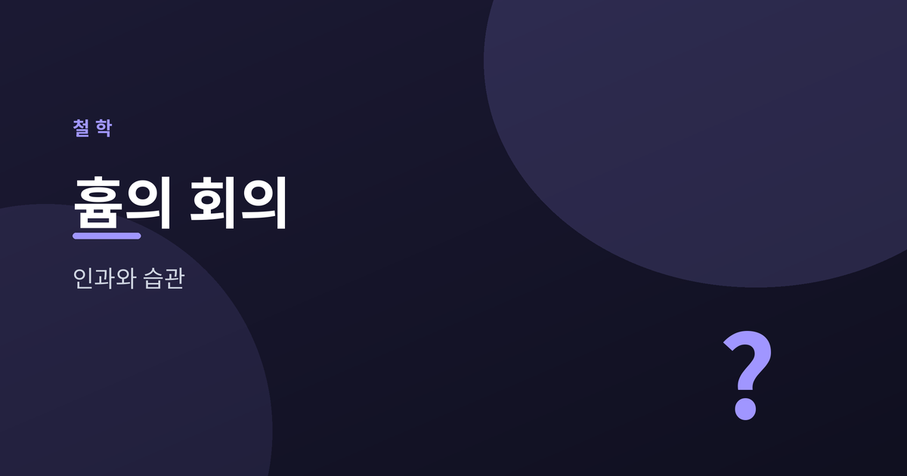
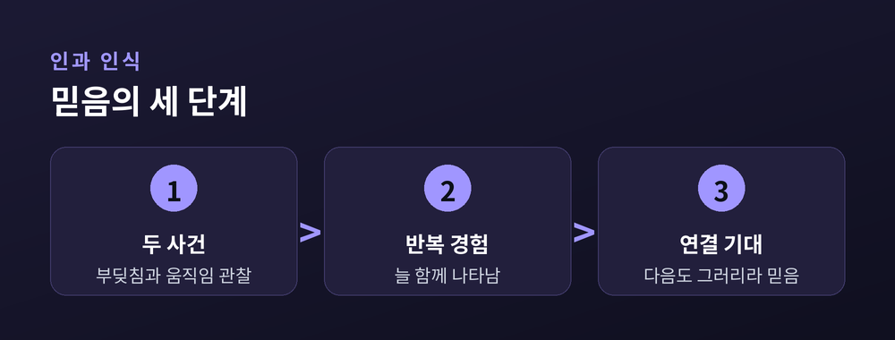
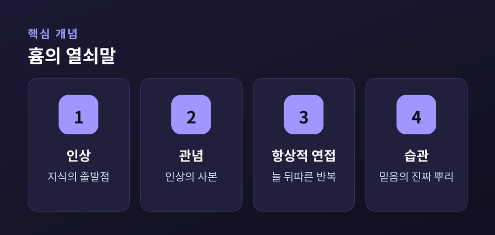
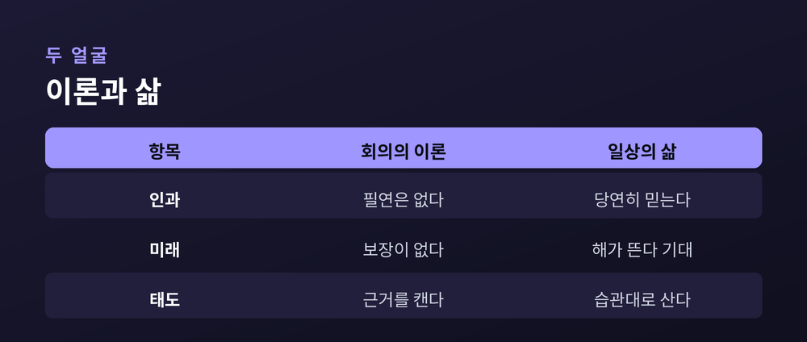

우리는 왜 내일도 해가 뜬다고 믿는가

이번 글에서는 18세기 철학자 데이비드 흄의 인과관계 비판을 정리해 보겠습니다. 그는 우리가 당연하게 여기는 믿음 하나를 조용히 흔들어 놓았습니다. 바로 "원인이 있으면 결과가 따른다"는 생각입니다.
흄의 물음은 소박해 보입니다. 내일도 해가 뜬다는 것을 우리는 어떻게 아는가. 지금껏 그래 왔으니 앞으로도 그럴 것이라는 대답은, 생각보다 튼튼하지 않습니다.
그 빈틈을 함께 들여다보려 합니다.
흄은 경험론자였습니다. 우리의 지식은 타고나는 것이 아니라 경험에서 온다고 보았습니다. 머릿속에 미리 새겨진 진리 같은 것은 없다는 입장입니다.
그는 마음의 재료를 둘로 나눕니다. 하나는 인상입니다. 지금 눈앞의 붉은 사과, 손끝의 차가움처럼 생생하고 직접적인 지각입니다. 다른 하나는 관념입니다. 그 인상이 흐릿하게 남은 기억이나 상상입니다.
순서가 중요합니다. 인상이 먼저고, 관념은 그 뒤를 따릅니다. 그래서 흄은 하나의 시금석을 세웁니다. 어떤 관념이 참인지 의심스러울 때, 그것이 어떤 인상에서 나왔는지 되물으라는 것입니다. 뿌리가 되는 인상을 찾지 못한다면, 그 관념은 공허할지도 모릅니다.
이 시금석을 인과관계에 들이대면 문제가 드러납니다. 당구공 하나가 다른 공을 때립니다. 맞은 공이 굴러갑니다. 우리는 앞의 사건이 뒤의 사건을 일으켰다고 말합니다.
그런데 흄은 되묻습니다. '일으켰다'는 필연적 연결을, 우리는 대체 어디서 보았습니까. 우리가 실제로 관찰한 것은 두 장면뿐입니다. 공이 부딪치는 장면, 그리고 공이 움직이는 장면입니다. 그 사이를 잇는 힘이나 끈은 어디에도 보이지 않습니다.
우리가 가진 것은 항상적 연접입니다. A 다음에 늘 B가 뒤따랐다는 반복된 관찰입니다. 하지만 '늘 뒤따랐다'는 것과 '반드시 뒤따른다'는 것은 다릅니다. 반복은 습관을 만들 뿐, 필연을 증명하지 못합니다.

그렇다면 우리는 왜 그토록 확신할까요. 흄의 대답은 뜻밖에 담담합니다. 이유는 이성이 아니라 습관에 있다는 것입니다.
같은 순서를 여러 번 겪으면, 마음에 하나의 버릇이 생깁니다. A를 보면 B를 저절로 떠올리는 기대입니다. 이 기대가 곧 우리가 인과라고 부르는 느낌의 정체입니다. 즉 필연은 세계에 있는 것이 아니라, 세계를 바라보는 우리 마음의 습관에 있는 셈입니다.
흄은 이 결론을 냉소로 몰고 가지 않습니다. 습관은 결함이 아니라, 인간이 세상을 살아가는 자연스러운 방식이라고 보았습니다. 우리는 증명해서 믿는 것이 아니라, 익숙해져서 믿습니다.

여기서 그 유명한 귀납의 문제가 나옵니다. 우리는 과거의 사례를 모아 미래를 예측합니다. 지금껏 아침마다 해가 떴으니, 내일도 뜰 것이라고 믿습니다.
그런데 이 추론에는 숨은 전제가 하나 있습니다. "자연은 앞으로도 지금까지처럼 한결같을 것이다"라는 가정입니다. 문제는 이 전제 자체를 증명할 길이 없다는 데 있습니다. 그것을 다시 경험으로 뒷받침하려 들면, 결국 같은 자리를 맴돌게 됩니다.
그렇다고 흄이 해가 뜨지 않을 것이라 말한 것은 아닙니다. 다만 그 확신에 논리적 보장이 없다는 점을 짚었을 따름입니다. 우리는 증명 위에 서 있는 것이 아니라, 자연에 대한 신뢰 위에 서 있습니다.
이쯤 되면 흄이 모든 것을 무너뜨린 사람처럼 보일지 모릅니다. 그러나 그의 회의는 온건합니다. 그는 지식의 한계를 정직하게 그었을 뿐, 삶을 부정하지 않았습니다.
흄 자신도 이렇게 인정했습니다. 서재를 나와 친구들과 식사를 하고 나면, 그 모든 회의적 물음이 부질없고 우습게 느껴진다고 말입니다. 이론은 우리를 흔들지만, 삶은 우리를 다시 땅에 세웁니다.
그의 회의주의는 "아무것도 믿지 말라"가 아닙니다. "우리가 무엇을 근거로 믿는지 정직하게 보라"에 가깝습니다. 확신과 겸손을 함께 쥐는 태도라고 생각합니다.

흄의 물음은 한 사람을 깊이 흔들었습니다. 임마누엘 칸트입니다. 그는 흄이 자신을 "독단의 잠에서 깨웠다"고 고백했습니다.
칸트는 흄의 도전을 정면으로 받았습니다. 인과가 경험에서 길어 올릴 수 없는 것이라면, 그것은 오히려 경험을 가능하게 하는 우리 인식의 틀일지 모른다고 보았습니다. 세계가 인과를 가르쳐 주는 것이 아니라, 우리가 인과라는 안경을 끼고 세계를 본다는 발상입니다.
흄이 옳았는지 칸트가 옳았는지, 여기서 판정하려는 것은 아닙니다. 다만 좋은 물음 하나가 어떻게 다음 세기의 사유를 열었는지는 분명합니다.
정리하면 이렇습니다. 흄은 우리에게서 확신을 빼앗은 것이 아니라, 그 확신의 뿌리를 보게 했습니다.
우리는 세계를 증명하며 사는 것이 아니라 신뢰하며 삽니다. 내일도 해가 뜰 것이라 믿으시겠지요. 그 믿음이 어디서 왔는지 한 번쯤 되물어 보신다면, 흄과 잠시 같은 자리에 서 계신 것입니다.